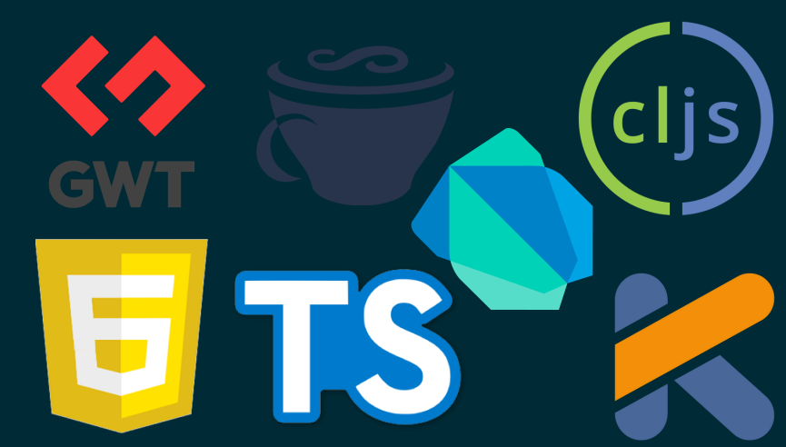

Scala.js
Agenda
- What's wrong with JS
- What is Scala.js
- Show me the code
- Scala.js in RingCentral
What's wrong with Javascript?

["10", "10", "10", "10"].map(parseInt) // [10, NaN, 2, 3]
JavaScript 4K demo competition! Build an amazing app with fewer than 4096 dependencies
“4096 dependencies ought to be enough for everyone“ ~ Bill G.
...
Everyone wants a better Javascript
Why Scala.js?
- Strong types
- Expressive language
- Good JS interoperability
- One language for client/server
- Good IDE support
What is Scala.js?
Scala.js is a compiler that converts Scala code into the equivalent, executable Javascript
Scala to js build
Hello World
import scala.scalajs.js.JSApp
object Main extends JSApp {
def main(): Unit = {
println("Hello world!")
}
}Ajax example
val xhr = new XMLHttpRequest()
xhr.open("GET", url)
xhr.onload = (_: dom.Event) => {
if (xhr.status == 200) {
element.innerHTML = xhr.responseText
}
}
xhr.send()
or
Ajax.get(url).foreach { xhr =>
element.innerHTML = xhr.responseText
}Cross building
scalaVersion in ThisBuild := "2.12.1"
lazy val root = project.in(file("."))
.aggregate(client, server).
settings(
name := "scala-js-sample root"
)
lazy val app = crossProject.in(file("./app")).
settings(
name := "scala-js-sample"
).jvmSettings(
...
).jsSettings(
...
)
lazy val client = app.js.settings()
lazy val server = app.jvm.settings()
Unit tests
jsEnv
test framework
class SampleSpec extends FlatSpec with Matchers
with BeforeAndAfterAll {
override protected def beforeAll(): Unit = Application.main()
"SampleSpec" should "check 'root' element" in {
Option(document.getElementById("root")) shouldBe defined
}
}Javascript interoperability
Types mapping
- Primitive JS types
- Arrays, functions, etc
- js.Dynamic
Facades
@js.native
trait JQuery extends js.Object {
def html(htmlString: String): JQuery = js.native
def html(): String = js.native
def height(): Double = js.native
def height(value: Double): JQuery = js.native
def width(): Double = js.native
def width(value: Double | String): JQuery = js.native
...
}Export
@JSExportTopLevel("js.Hello")
class Hello(val x: Int) {
@JSExport
def square(): Int = x * x
@JSExport("add")
def addMe(y: Int): Int = x + y
}
var x = new js.Hello(5);
console.log(x.square());
console.log(x.add(10));
Scala.js-defined JS classes
import scala.scalajs.js
import js.annotation._
@ScalaJSDefined
class Foo extends js.Object {
val x: Int = 4
def bar(x: Int): Int = x + 1
}